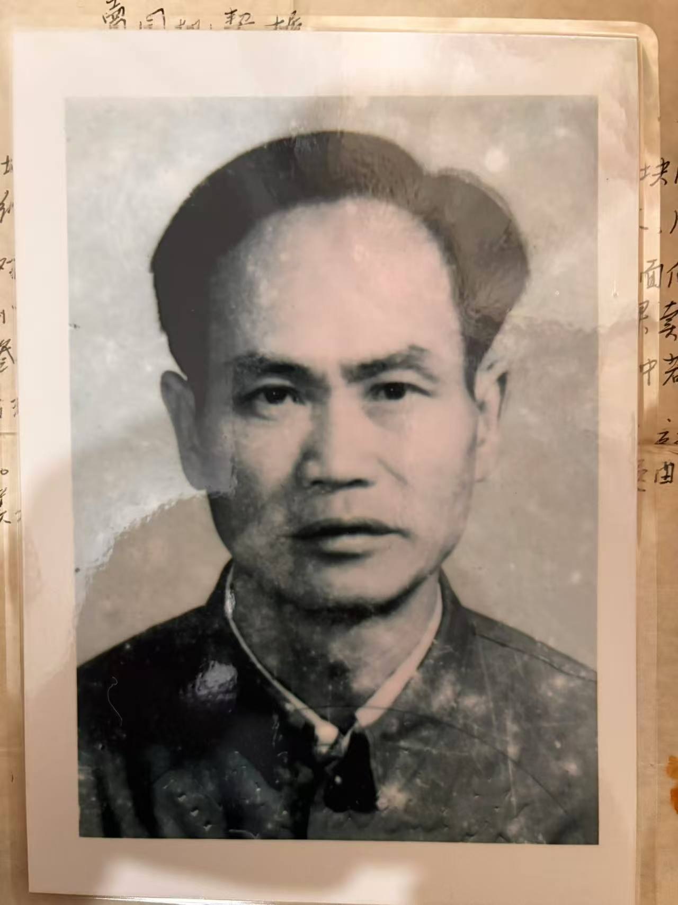
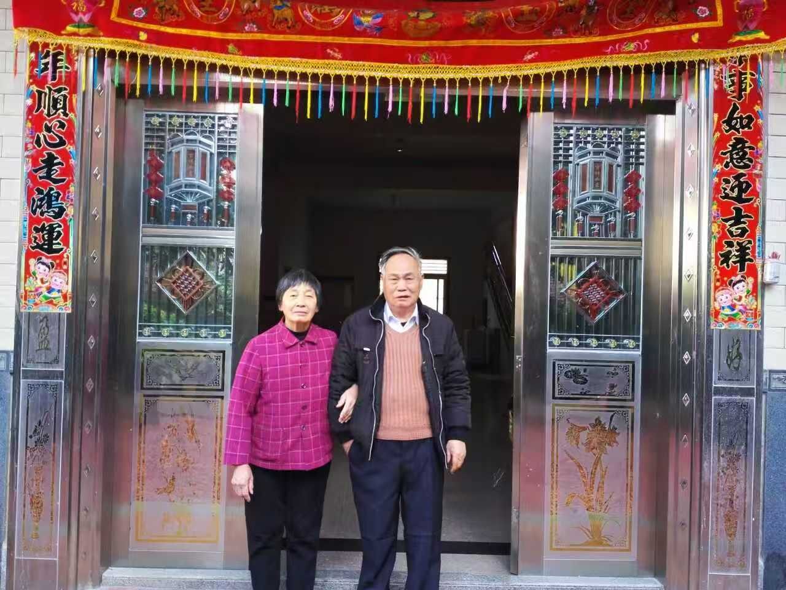
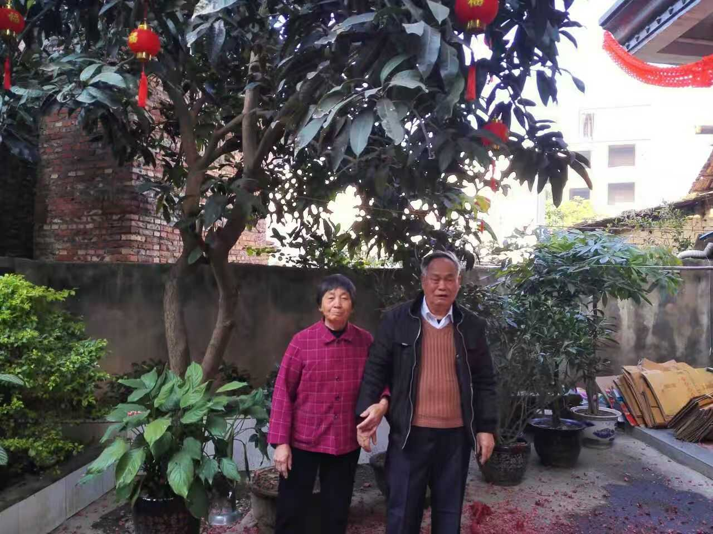
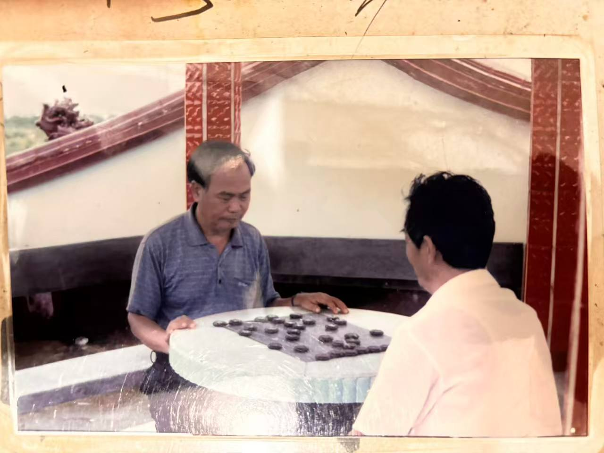
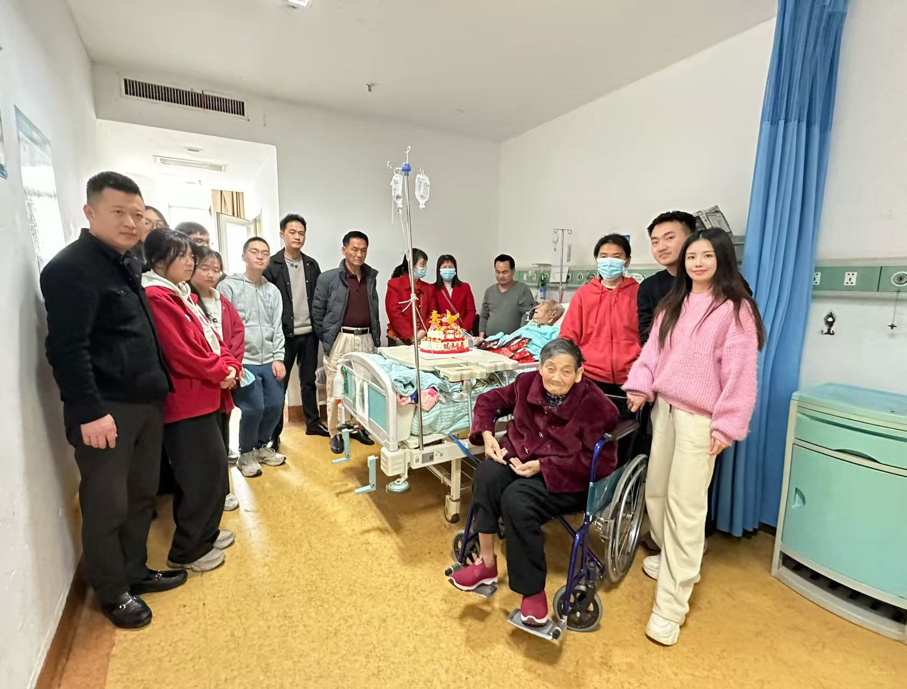

1937
农历七月初七
农历七月初七
生在仙游，长成一个要强的人
史瑞模出生于福建仙游。后来几十年里，他凭着自己的本事养活了一大家人，也把敢闯、肯担的性子留给了后辈。
1937 农历七月初七 至 2026 年 2 月 21 日
他走过大江南北，做过三十多年的采购，开过远近闻名的小吃店。一个人养活一家人，遇到事情敢担，认准了就往前走。

一辈子要强，一辈子能干。
路走得远，家也扛得稳。
他走过的路
采购、小店、西部经商、盖房持家，他这一生换过不少活法。每一次转身，都和一家人的日子连在一起。
史瑞模出生于福建仙游。后来几十年里，他凭着自己的本事养活了一大家人，也把敢闯、肯担的性子留给了后辈。
他在仙游县赖店镇供销社做了三十多年采购员。工作带他走遍全国许多地方。路见得多，世面见得广，他把在外奔波挣来的生活，一点点带回家里。
退休后，他在盖尾镇盖尾村开起莆仙小吃店，卖海蛎饼、扁食等小吃。东西做得好，生意也好。离开供销社，他照样能凭手艺和眼光把新的日子做起来。
家人准备去西部做生意，他支持这个决定，转让了经营正旺的小吃店，让年轻人去青海闯一闯。自己留在家乡养老，闯荡半生的人也慢慢闲了下来。
那栋三层楼房，是他给孩子托起的一份家业。房子后来因生意周转卖掉了，盖房时花过的心力没有跟着消失。家人一直记得，他真心实意地为下一代打算过。
他这一生，靠的就是自己的本事。
走到哪里，哪里就是路。
一位采购员，一位小店老板，一家人的顶梁柱
生活里的他
忙的时候把事情做成，闲下来也有自己的兴致。他的潇洒落在每天的生活里，棋盘一摆，照样从容自在。



晚年的相守
2021 年 7 月，妻子陆珍英突发脑溢血。史瑞模年纪也已经大了，依然一直照顾她。年轻时，他在外面跑采购，挣钱养家。到了晚年，他把时间留在妻子身边，照料她的生活。
他的厉害，家人早就知道。晚年照顾奶奶的这些年，家里人也都看在眼里。
一家人还在身边
生命最后一程，家人围在病床边。镜头里的人有老有少，这就是他辛苦一生撑起来的家。

你走过的路，做过的事，照顾过的人，都留在这个家里。以后我们提起你，记得的不只是离别。我们会记得你的能干、要强和洒脱，记得你怎样靠一个人的肩膀，撑起了一大家人的生活。